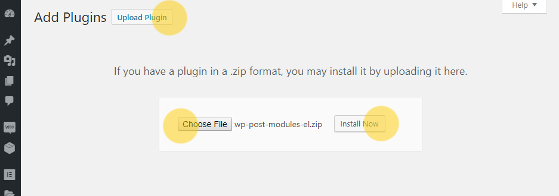
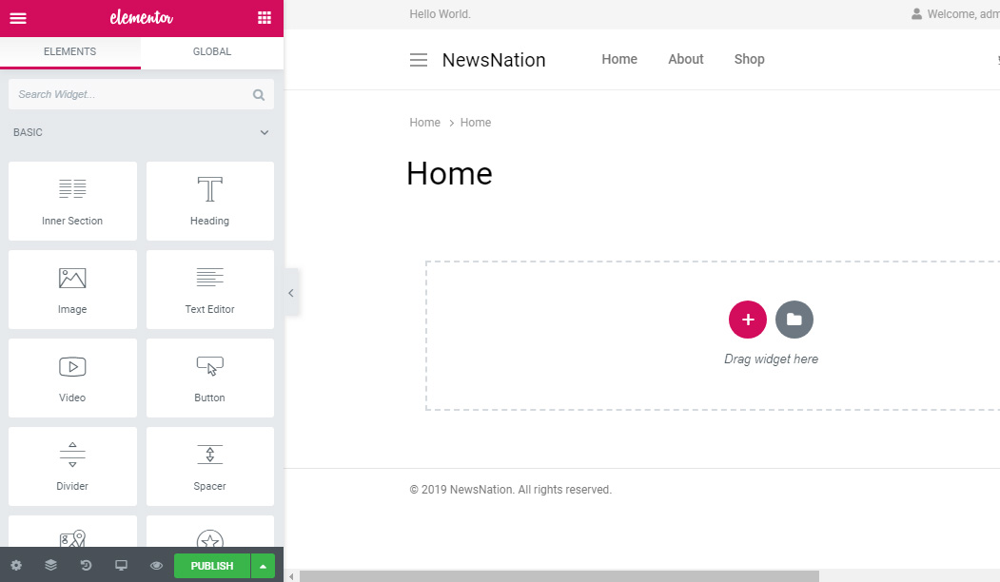
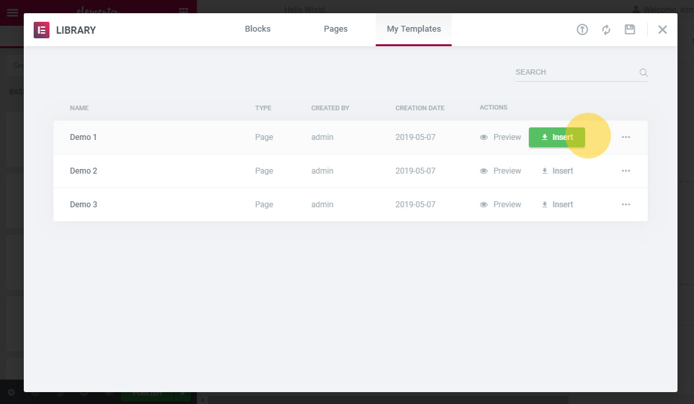
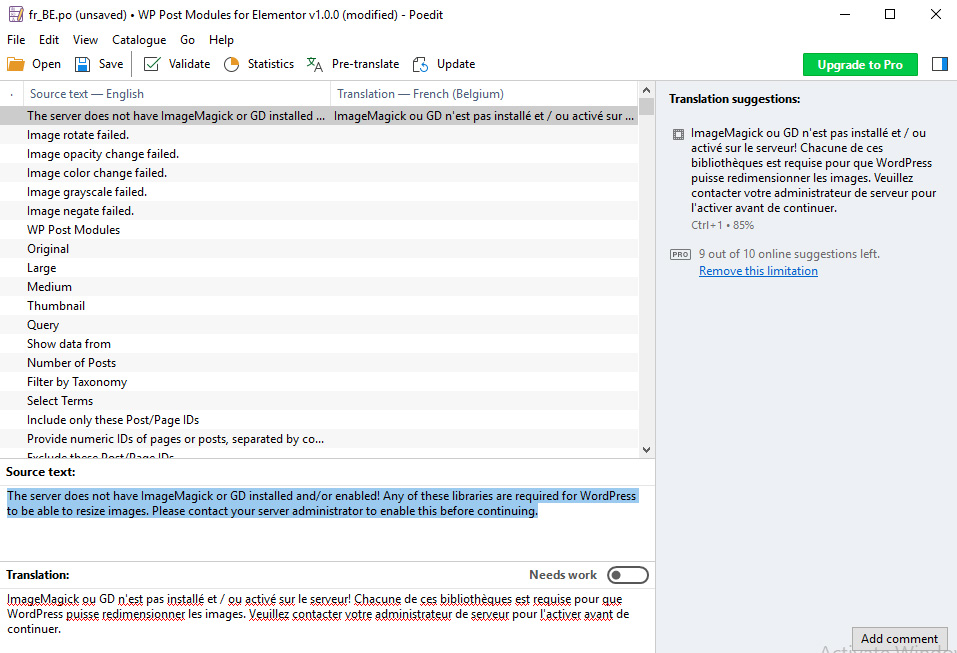

WP Post Modules
Created: May 06, 2019. Last updated: Apr 15, 2020. Version: 1.5.3. Author: SaurabhSharma. email: xconsau@gmail.com
Introduction
Dear buyer, thank you for showing your trust in "WP Post Modules" plugin and purchasing it. I have handcrafted this document to lessen your efforts in configuring and using this plugin seamlessly. If you find any bug or issue which is beyond the scope of this documentation file, feel free to contact me through my CodeCanyon profile page here. Thanks so much!
Table of Contents
Install WordPress
If you have not set up your WordPress installation yet, you can download latest copy of WordPress from the WordPress.org. After downloading WordPress, go through the installation instructions inside readme.html file and set up your WordPress installation. A detailed installation guide can be found on official WordPress Site.
Install Elementor Page builder Plugin
The "WP Post Modules" plugin is an extension/addon for Elementor Page Builder. Elementor is available in both free and pro versions. The WP Post Modules plugin works with both versions. It will be required to install and activate Elementor plugin in order to use WP Post Modules. Kindly follow these steps for installing Elementor Plugin:
1. Log in to your WordPress site as admin, and navigate to Plugins > Add New
2. Inside "Search Plugins" field, type "Elementor" and hit Enter key.
3. From the search results, install Elementor plugin and activate it.
For detailed documentation on using Elementor plugin, please browse articles on the official documentation page of Elementor Plugin.
Install WP Post Modules Plugin
In order to install WP Post Modules, follow these steps:
1. Download plugin zip archive from your codecanyon.net account's downloads section and save on your local drive. You can download "All files" archive or installable plugin zip archive.
2. If you have downloaded "All files" archive, unzip/extract this archive and look for the folder named wp-post-modules-el.zip. This zip archive shall be used for installation in WordPress admin.
3. Log in to your WordPress site and navigate to Plugins > Add New. Click on the "Upload Plugin" button.
4. Click on the "Choose file" button and browse the plugin ZIP file:
Upload Plugin
5. Next, click on the "Install now" button. The plugin will be installed.
6. After installation, navigate to Plugins > Installed Plugins, and activate the "WP Post Modules for Elementor" plugin.
Manual installation using FTP or File Manager
You can also install the plugin manually using FTP or File Manager. For that, log in to your site's Control Panel > File Manager, or log in to FTP and upload the extracted plugin folder to /wp-content/plugins/ directory. So your installed plugin address will be /wp-content/plugins/wp-post-modules-el/. After uploading the folder, log in to WordPress and activate the plugin inside Plugins > Installed Plugins.
Create a Post Module
Before you start creating post modules, it is required that your site contains some posts to show in this module. So if there are no posts yet, make sure you create some posts and assign featured images to them. Once you have some posts and categories, you are ready to use the Posts Module. You can follow these steps for creating a new module.
1. Navigate to WordPress admin's Pages > Add new. Next, enter a title for the page.
 Add new page
Add new page
2. Click on "Edit with Elementor" button. The Elementor page builder will be loaded, as shown below.
Page builder loaded
3. From the "Elements" > General Section, click and drag the "WP Post Modules" widget inside page content area.
 Use WP Post Modules Widget
Use WP Post Modules Widget
4. If there are some posts on your site, the module will show posts in grid style (with default settings), as shown below.
 Post Module Result
Post Module Result
In order to edit the module, click on the module body. The side panel will show settings for this module. The "Content" tab will be open by default, with the "Query" section open. You can choose which posts to show by filtering them using category, orderby, number of posts, and other such parameters in this section. Let's see each section's functionality:
Content Tab
Query: This section contains options for choosing the post results criteria. You can choose to show posts from category, custom post types, individual posts, pages, etc. You can sort results based on date, comment count, title, etc.
Schema: This section contains option for enabling Schema Microdata in posts module. You can change schema properties in the text fields provided in this section.
Advertisements: This section contains option to show advertisements after n number of posts.
Style Tab
The Style tab is the main customizing tab of this plugin. There are around 8 sections in this tab for styling and customizing the module content as per your need.
Display: This section contains settings for choosing display style like grid, list, tile, ticker, etc. Depending upon the display style chosen, there are various sub settings for margin, padding, colors, columns, etc.
Images: This section contains image specific settings. You can assign image width, height, crop mode and various other settings for images.
Title: This section contains typography settings for post titles of the module. You can choose fonts from a huge library of Google fonts and assign typography settings to the post title.
Excerpt: Similar to the title section, this section contains typography settings for the post excerpt text.
Post Meta: This section contains settings for post meta of each post in the module. You can choose to show/hide post date, author, comments, etc. and style them with different colors and typography.
Social: This section contains option for enabling social sharing buttons per post. Using these share buttons, users can directly share a post on social platform.
AJAX Options: This section contains settings for enabling AJAX functionality on posts module. The plugin supports ajax next/previous navigation, and also ajax loadmore feature.
Slider Options: This section contains settings for enabling slider on a post module. You can choose number of slides to show, along with other settings like animation delay, timeout, etc.
Using Pre Built Templates
For your convenience, WP Post Modules comes with ready made examples of Home page layouts to be used on your site. You can import these layout templates and edit as per your own content. In order to create a page using pre-built templates, follow these steps:
1. Navigate to WordPress admin's Pages > Add New. Next, enter a title for the page.
2. Click on the "Edit with Elementor" button. The page builder mode will be activated.
3. Click on the "Add Template" icon inside the page editing area.
 Add Template
Add Template
4. A Template Library panel will open. Click on the "Import Template" icon for importing a template.
 Import Template
Import Template
5. From the file chooser, click on the "Select File" button and browse the demos.zip file.
 Select Template File
Select Template File
The demos.zip file is located inside plugin's 'dummy_data' folder.
6. Upon successful import, you shall see all available page templates like Demo 1, Demo 2, Demo 3, etc., as shown below:
Choose a template to import
7. Click on the "Insert" button to insert the template into your current page. It will ask to import document settings. Click on "Yes". The template will be inserted with original settings as on live demo.
Important: The posts data will be shown as on your site. It will not show posts as on live demo. If you want to show same posts as on live demo, you can import dummy XML data for posts and categories, and import to your site using WordPress Importer.
8. After importing the template, click on any post module and edit it's settings to change post categories, number of posts, etc. as per your requirement.
Note: If your theme supports full width page, it is recommended that you keep the full width page layout for proper display of templates. All live demo templates are built on a full width page.
Translating the Plugin
The WP Post Modules plugin is translation ready with language files included in plugin. You can translate the plugin with any translation plugin like WPML, qTranslateX or Loco Translate. But if you wish to translate it manually using PO files, kindly follow these steps.
1. Download poEdit Software from https://poedit.net/ and install on your computer.
2. Open poEdit software and click on File > New from POT/PO file.
3. Browse the wp-post-modules-el.pot file as located inside plugin's '/languages/' folder. A language popup will appear. Choose your language and click on "OK".
 Choose translation language
Choose translation language
4. For example, choose "French" language. Next, click on any message string and write it's translation inside the "Translation" field.
Edit Translation
5. After making necessary translations, go to File > Save as. Here, provide the file name as wppm-el-language_country. Please note that the "wppm-el-" textdomain name is required here. So if it is Arabic, the filename would become wppm-el-ar_SA.po
6. Once the file is saved, a wppm-el-language_country.mo file will be compiled and generated.
7. Now you need to define the language inside WordPress settings. For that, log in to WordPress admin and navigate to Settings > General. From the "Site Language", choose the language in which you have created the PO file. Then save changes.
The plugin shall now display translated strings successfully.
Frequently Asked Questions
Below are some Frequently Asked Questions that may help you in finding a solution to your specific issue.
1. I have just uploaded the download zip file to WordPress, but it is showing installation error. Why?
Your download zip file is not the plugin itself. It is a collection of plugin and documentation. It will be required to unzip this folder first. Next look for the folder named "wp-post-modules-el.zip". Use this zip folder for uploading the plugin via WordPress. Alternatively, you can download installable plugin file from your CodeCanyon account's downloads section.
2. How to update the plugin
Plugin can be updated in two ways:
2.1) From the WordPress admin: Navigate to Plugins > Installed Plugins. Deactivate the "WP Post Modules" plugin and delete it. Next, install the latest copy of plugin by browsing the wp-post-modules-el.zip file from your computer.
2.2) From the FTP or Control Panel: Log in to your FTP or Control Panel of hosting account and locate the /wp-content/plugins/wp-post-modules-el/ folder. Delete this folder and update the latest extracted folder from your computer. This method is safer than the previous one.
Important: After updating the plugin, clear all browser caches and plugin caches (if using a caching plugin).
Sources and Credits
The plugin uses following files and resources, as listed:
jQuery Easing
http://gsgd.co.uk/sandbox/jquery/easing/
jQuery Marquee
@author Aamir Afridi - aamirafridi(at)gmail(dot)com / http://aamirafridi.com/jquery/jquery-marquee-plugin
jQuery Owl Carousel
https://github.com/OwlCarousel2/
BFI Thumb
(c) 2013 Benjamin F. Intal / Gambit
Live demo images
www.pexels.com
www.unsplash.com
Elementor Page Builder for providing a platform to create the module.
WordPress for providing a platform on which we can create plugins.
Once again, thanks so much for purchasing this plugin. I'd be glad to help you if you have any questions relating to this plugin. If you have a more general question relating to the plugins on CodeCanyon, you might consider visiting the forums and asking your question in the "Item Discussion" section.
Saurabh Sharma